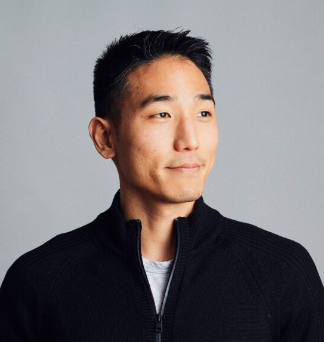
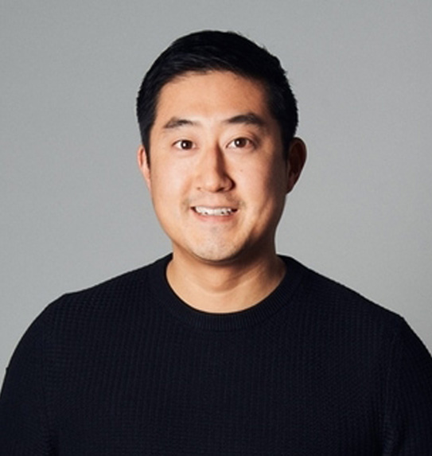

Peter Kang began building websites for clients in high school and throughout college. After a short stint in investment banking, he co-founded Barrel, a New York-based digital agency that he ran for 18 years.
Peter has played the role of lead strategist, user experience specialist, creative director, and CEO throughout his career, helping clients navigate branding and the digital landscape.
He enjoys working closely with agency leaders both in and outside of Barrel Holdings, being a sounding board on strategy and sharing lessons learned from years of operating an agency business.
An avid reader and writer, Peter publishes frequently on LinkedIn and his website (peterkang.com). He is also the author of The Holdco Guide: How Entrepreneurs Structure and Build a Holding Company That Lasts.

Sei-Wook Kim's entrepreneurial journey began at Columbia University when he co-founded Barrel. As a self-taught coder, Sei-Wook oversaw Barrel's early web development efforts and managed its largest client accounts.
Over the years, Sei-Wook acquired a variety of experiences from leading business development, managing the project management at the agency, and overseeing all of business operations as COO & President of Barrel.
Sei-Wook leads the Barrel Holdings effort in providing our portfolio agencies with finance, legal, and HR support, combining his years of experience and connecting teams with the right specialists.
Outside of Barrel Holdings, Sei-Wook is a car enthusiast who loves to drive.